Duolingo Potion Animation
A 48-hour motion design test. I was handed three reference frames and a starter After Effects file, and asked to make the XP-refill potion feel alive: from the button press, through the refill, to a bubble loop that can run forever, and back to the home screen.
01 · The brief
Three frames, one bottle, 48 hours
- Animate between the three given reference frames
- Give the potion bottle personality
- User taps the button, the potion animates, then back to the Duo home screen
- Build a looping state for the bubbles rising out of the bottle
- Sized for mobile (iPhone 16 Pro Max)
- Starting point: a pre-made After Effects file with some assets
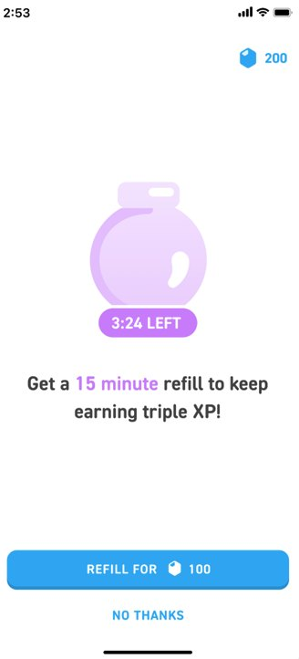
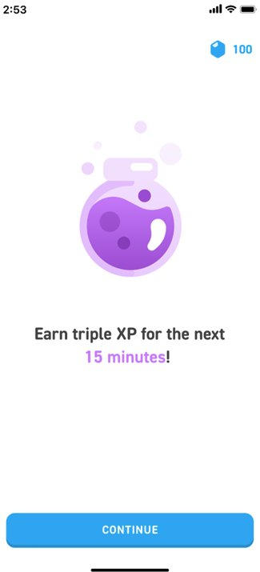
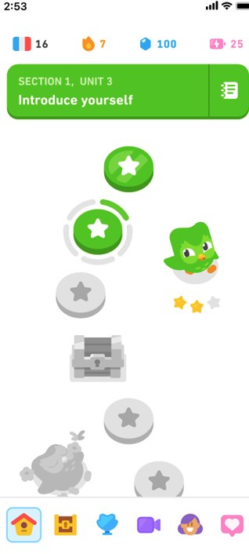
02 · Research
How does Duolingo already move?
Before touching keyframes I screen-recorded the app's existing potion screen and other reward moments, so the new animation would feel like it belonged.
What already worked
The background is full of motion, drifting energy bubbles, without pulling focus from the bottle.
What was missing
The bottle itself barely moves, and the liquid never actually fills up.
Objects have personality
Focal objects, like the reward chest, come alive through squash and stretch and carefully shaped speed graphs.
The button is the exception
It is the one non-smooth component: a drop shadow gives it depth and shows when it is pressed.
03 · Sketches
Planning the beats on paper
I broke the moment into three beats: tap the button, the background takes over, the potion fills up. Notes in the margins planned the details, like the background fading to a light purple, fading back to the screen before the loop starts, and the gem count ticking from 200 down to 100 in quick whole numbers with a counting sound.
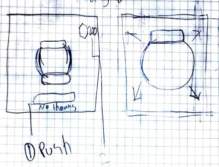
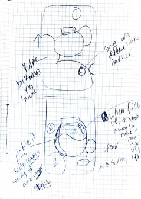
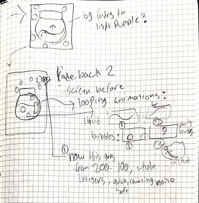
04 · Building it
Rebuilding the background, faster
The purple takeover needed the same drifting "energy bubbles" as the app, so I redrew the bubble in Illustrator and brought it into After Effects.
Instead of hand-placing every copy, I gave each one a small expression. seedRandom(index, true) gives every duplicate its own random size and position that stays put over time, so the field looks hand-placed while each new bubble is only a duplicate away.
// Position + Scale, every bubble seedRandom(index, true);
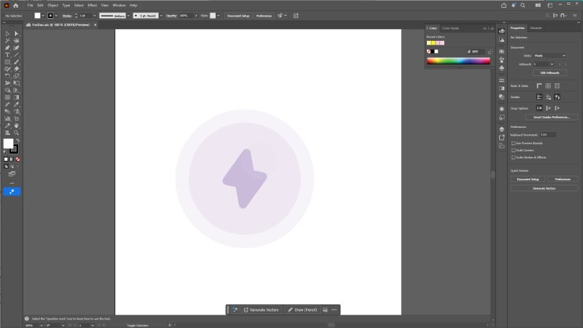
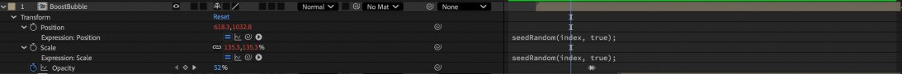
05 · The loop
A brew that never ends
The loop had to be seamless. I numbered every bubble at the top of the frame, then gave the bubbles inside the bottle matching numbers. Each one rises out of the potion, changes colour as it leaves the glass, and lands exactly where its twin started, so the last frame hands off to the first with no jump.
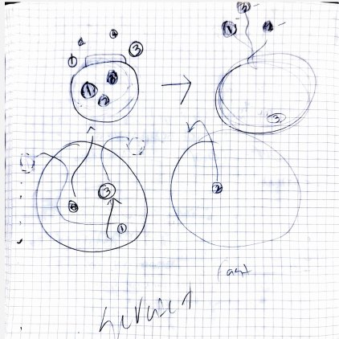
06 · Personality
Squash, stretch, fill, fizz
The bottle anticipates with a squash, stretches up as the purple floods in, wobbles as the liquid settles, and then starts to bubble. Sound sells it: a potion-loading cue under the fill and a fanfare as the triple-XP message lands.
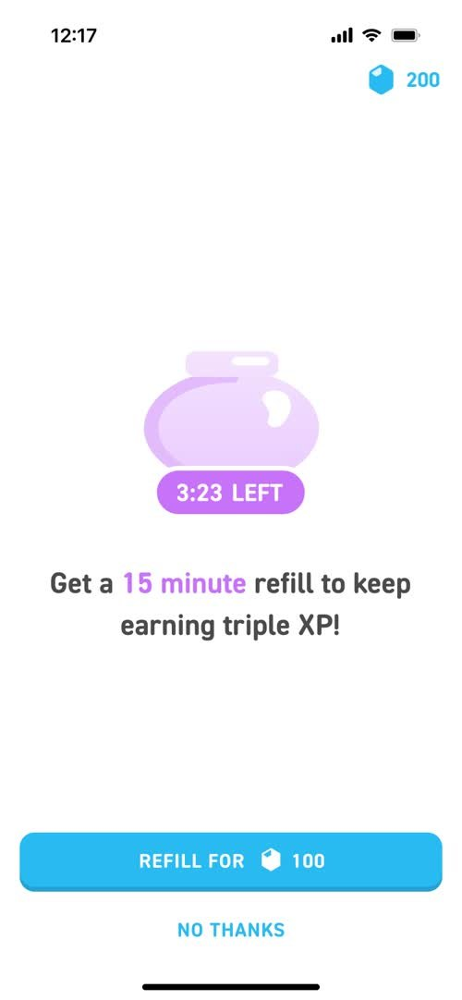
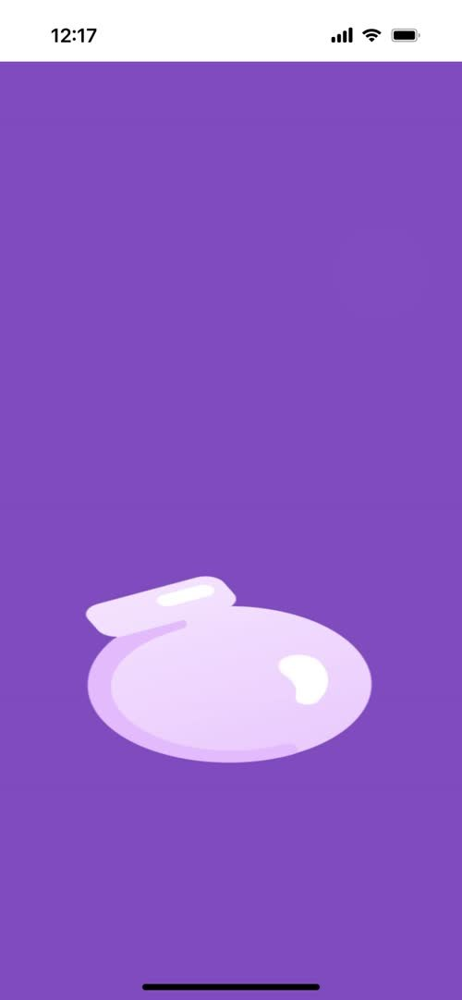
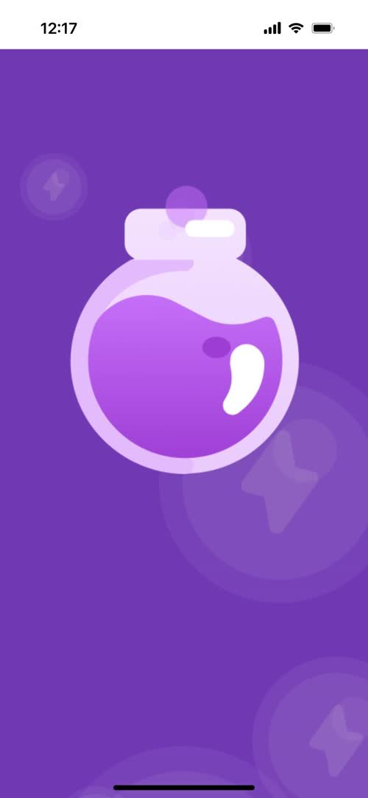
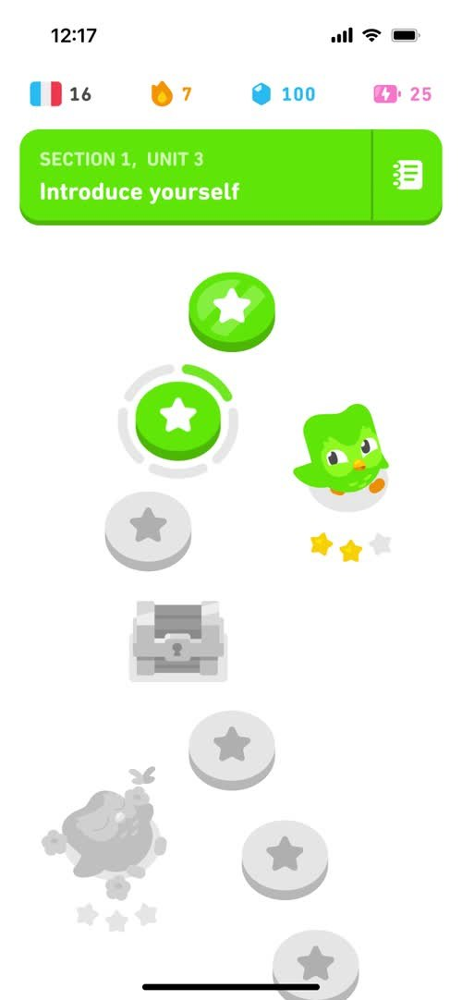
07 · Takeaways
What I took away
- Borrowing what already works in a client's animations, so new motion feels native to the product.
- Producing an animated deliverable for a client on a quick turnaround.
- Using JavaScript expressions in After Effects to randomize and multiply objects, and to loop a comp.
- Using sound to carry a motion piece.
- Interpreting personality and giving it to an inanimate object.